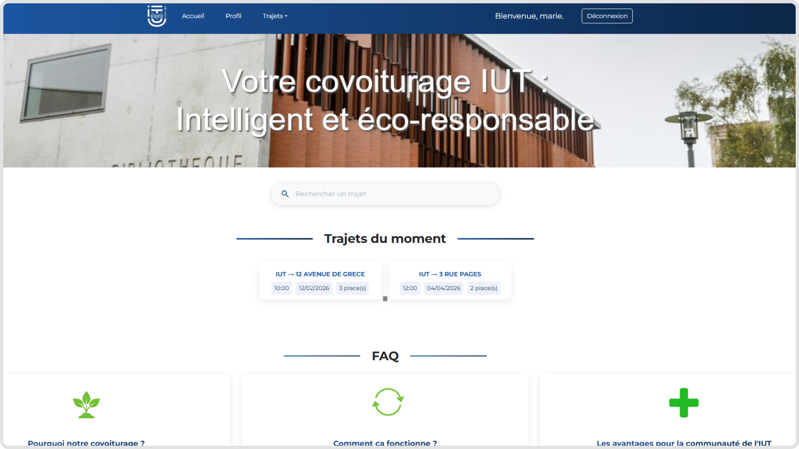
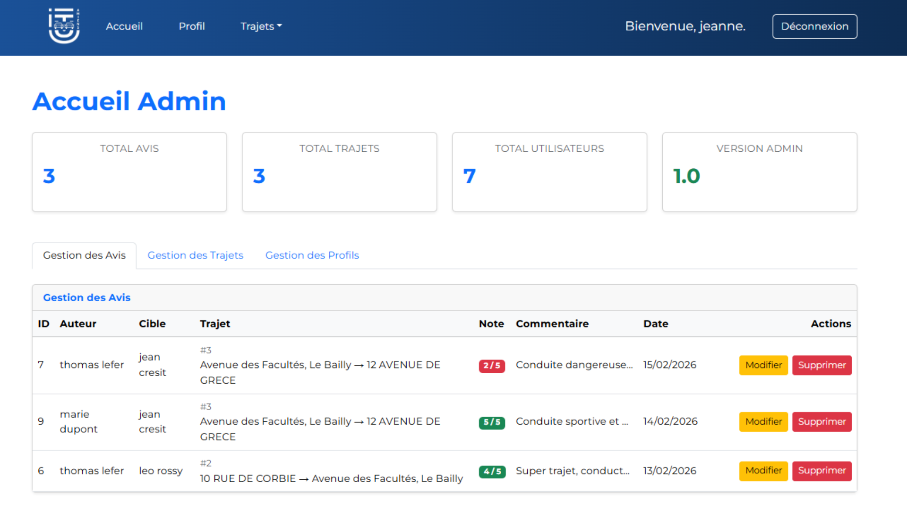

Deux expériences.
Ce qui s'est vraiment passé, les obstacles, et ce que j'en retire.
Construire un système data
de zéro, seul, en 8 semaines.
Jour 1 chez ISAGRI : concevoir un système data complet pour analyser les revenus de clients experts-comptables. Outils inconnus (Snowflake, Streamlit), 49 tables de données fiscales opaques, 8 semaines, autonomie totale.
Méthode : micro-projets avec données fictives pour valider chaque brique isolément avant de toucher aux vraies données.
Le déclic : des valeurs 1AJ | 20000 sans libellé. En croisant avec la déclaration 2042, j'ai compris — chaque code est une case fiscale officielle. Les 49 tables ont commencé à raconter une histoire cohérente.
Résultat : pipeline ETL (SQL Server → Snowflake, medallion), dashboard Streamlit, et une IA conversationnelle Cortex AI non prévue au départ — validée comme base de travail pour la suite.

// Pipeline ETL — SQL Server → Snowflake

// Dashboard analytique Streamlit

// IA conversationnelle Cortex AI
Cinq développeurs,
une plateforme, zéro chef de projet.
Covo'IUT — plateforme de covoiturage étudiant en PHP/MySQL. Cinq développeurs, sans répartition de rôles. Résultat des premières semaines : conflits constants, fonctionnalités dupliquées.
On s'est arrêtés pour tout lister et se répartir les blocs fonctionnels. Simple — mais ça a tout changé : chacun savait ce qu'il portait.
Livraison : trajets, profil, avis, autocomplétion d'adresse, espace admin. Ce que j'en retiens : la coordination ne s'improvise pas — clarifier les responsabilités dès le départ évite bien des frictions.

// Page d'accueil — Covo'IUT

// Espace administrateur